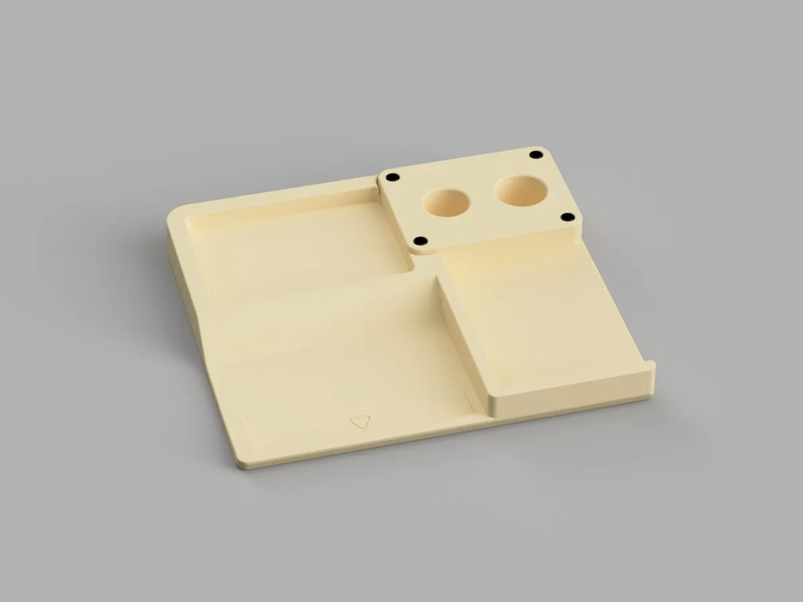
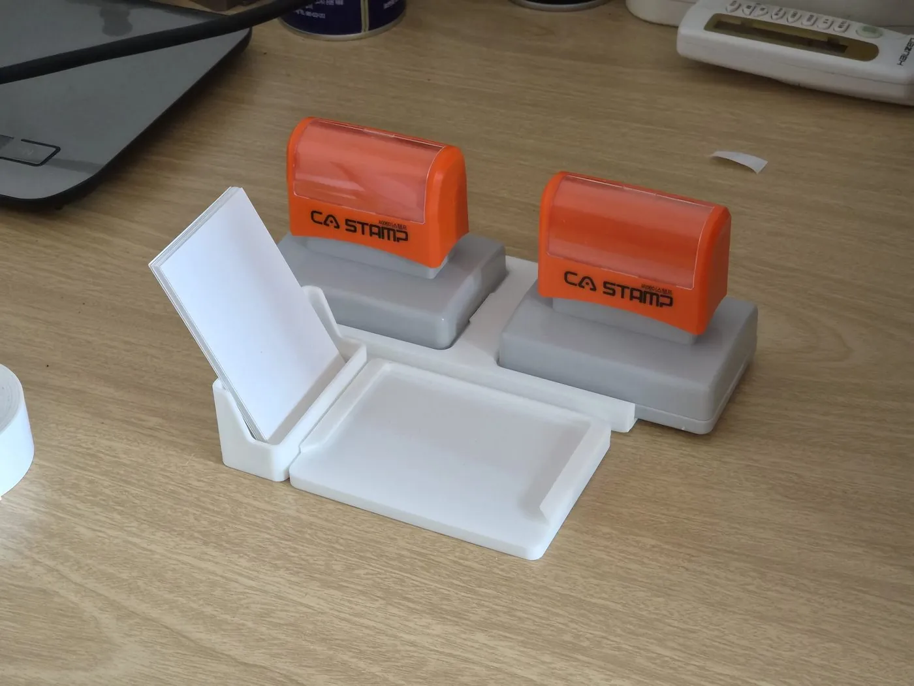
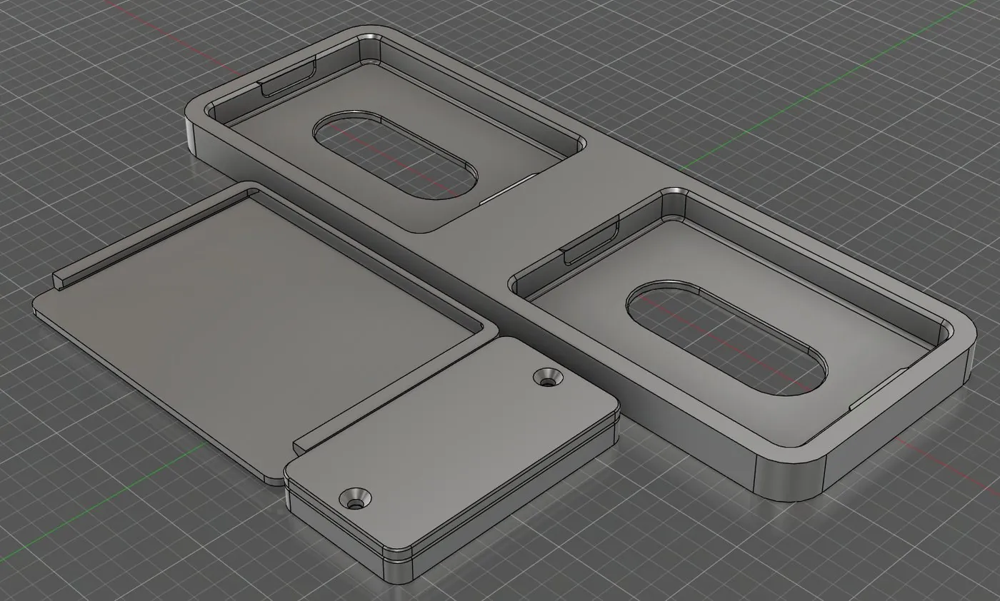
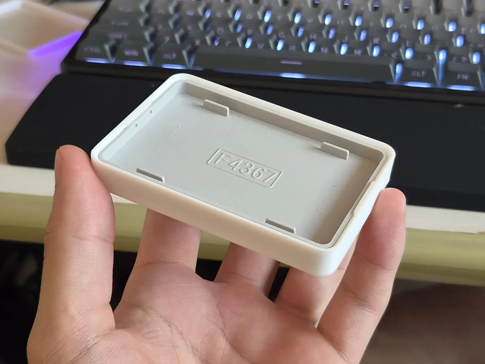
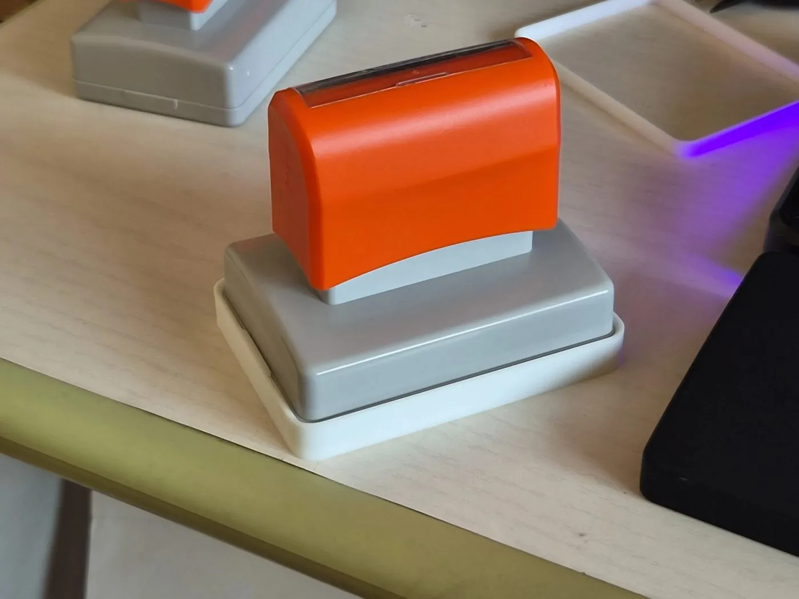
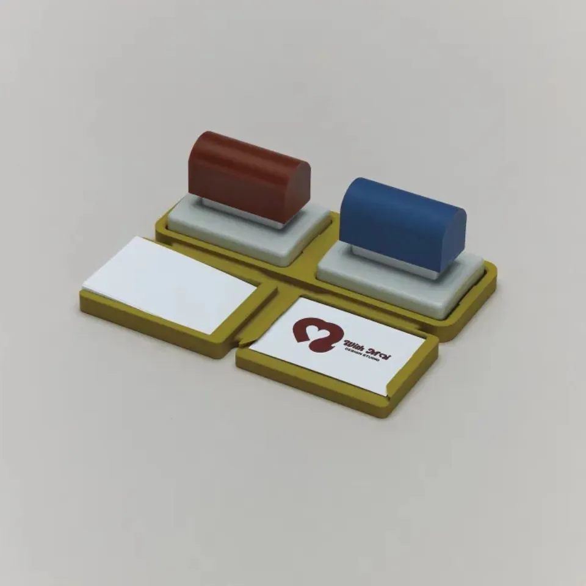

03 · 두 번째 작품
두 번째는
약 5일 만에 끝냈습니다
두 번째 작품인 2도는 같은 도장 2개를 나란히 둔 대칭 구조입니다.
첫 작품에서 치수와 구조를 검증해 둔 덕분에 약 5일 만에 설계를 마쳤습니다. 이번에도 시제품 약 5개로 다듬었습니다.

명함 오거나이저 2도 렌더
명함과 도장을 함께 담아 두었다가, 명함을 건네는 자리에서 직접 찍어 완성하는 명함 오거나이저입니다.술두루미 작가님의 의뢰로 두 종을 디자인하고 설계했고, 두 제품 모두 지금 판매 중입니다.
작가님이 원한 것은 기억에 남는 명함이었습니다.
명함을 그 자리에서 직접 찍어 만들면, 그 경험 때문에 평범한 명함도 오래 기억에 남습니다. 작가님이 해 오던 스탬프 작업을 잇는 제품이기도 했습니다.
받은 것은 이 아이디어뿐이었고, 스케치나 도면은 없었습니다. 형태와 구조, 치수는 전부 제가 정했고, 작가님과는 방향을 함께 이야기했습니다.
첫 작품인 3도에는 명함 크기 도장 1개와 작은 원형 도장 2개가 들어갑니다.
작은 도장을 원하는 자리에 찍어 명함마다 다르게 꾸밀 수 있습니다. 그래서 형태도 비대칭으로 만들었습니다.
참고할 만한 제품이 없어 처음에는 치수가 맞지 않는 곳이 많았습니다. 시제품을 약 5개 만들며 치수와 비율, 기능을 고쳤습니다.

명함 오거나이저 3도 렌더
두 번째 작품인 2도는 같은 도장 2개를 나란히 둔 대칭 구조입니다.
첫 작품에서 치수와 구조를 검증해 둔 덕분에 약 5일 만에 설계를 마쳤습니다. 이번에도 시제품 약 5개로 다듬었습니다.
명함 오거나이저 2도 렌더
외주 업체가 받은 파일 그대로 출력할 수 있게 처음부터 양산을 전제로 설계했습니다. 그래서 따로 양산 준비 없이 완성 파일을 그대로 넘겼습니다.
도장이 꽂히는 느낌, 명함을 꺼내는 동작, 전체 비율은 화면으로는 알기 어렵습니다. 시제품을 직접 손에 쥐어 보며 고쳤습니다.




시제품 과정. 최종 디자인과는 다릅니다.
조회수는 2도 영상이 3도 영상보다 두 배 넘게 많았습니다. 그런데 저장은 3도가 더 많았습니다.
2도 영상에는 "평범한 명함을 건네기 싫을 때"라는 문구가 붙어 있었습니다. 그런데 가장 많은 공감을 받은 댓글은 결과물이 너무 평범하다는 내용이었습니다.
I'm actually impressed with how extremely ordinary these cards are.
이 명함이 이렇게까지 평범하다는 게 오히려 대단하네.♥ 8,567
And this can't be printed because?
그래서 이걸 인쇄하면 안 되는 이유가?♥ 855
Takes 10x more time to make than normal cards. Looks exactly like a normal card.
일반 명함보다 10배 오래 걸리는데, 결과는 일반 명함이랑 똑같다.♥ 660
2도 릴스 실제 댓글 (작성자 생략)
2도는 같은 도장을 찍기만 하는 구조라, 직접 꾸미는 재미가 없었던 것으로 보입니다.
사람들이 저장해 두고 싶어 한 것은 직접 꾸밀 수 있는 3도였습니다.
두 제품 모두 작가님 스토어에서 판매되고 있습니다. 3도는 2도보다 2만 원 비싼 상위 제품입니다.결과물을 받아 보신 작가님의 반응도 무척 좋았습니다.

명함 오거나이저 2도 (술두루미 작가님 스토어 사진)